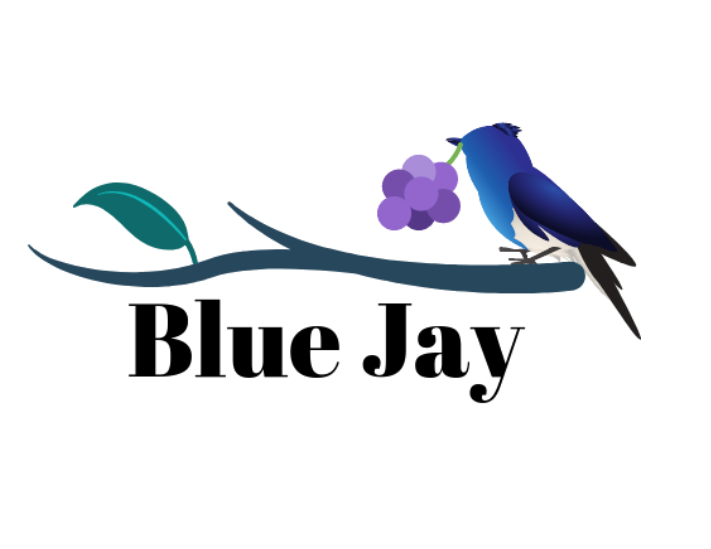
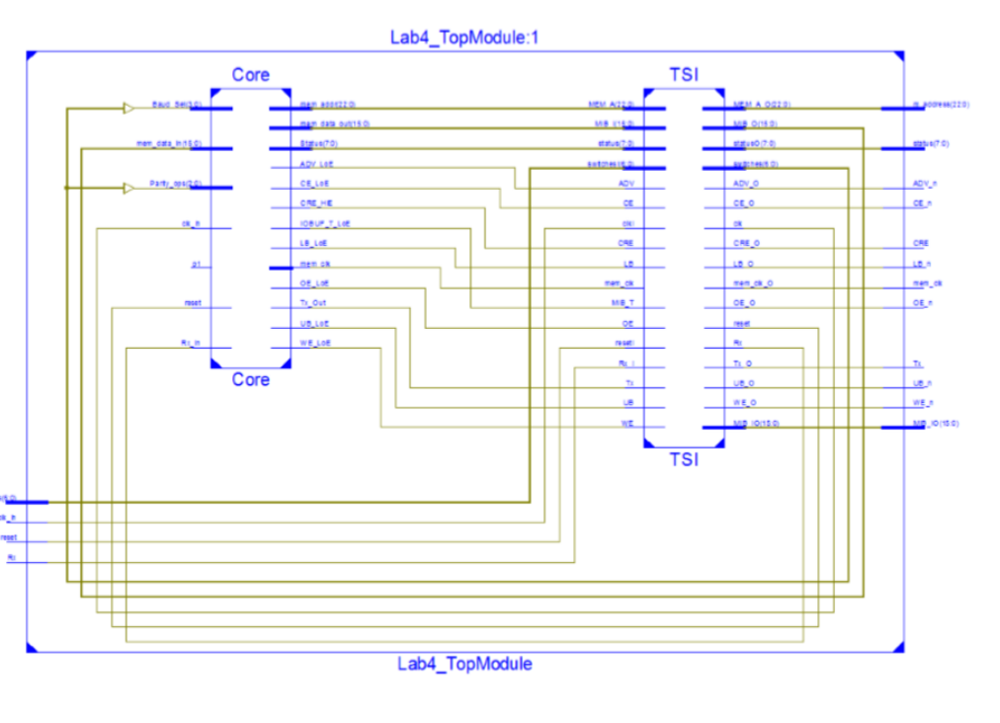
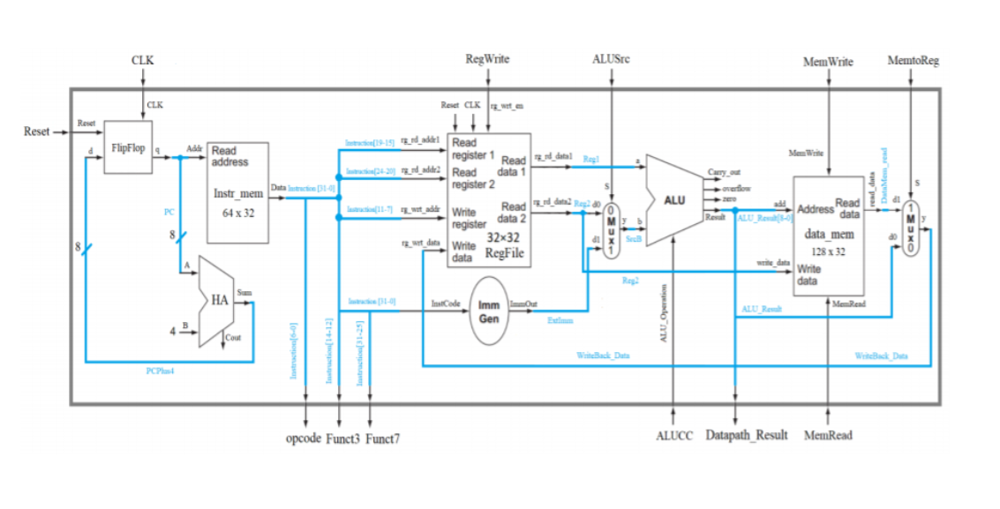
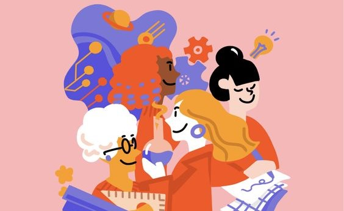
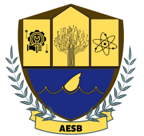
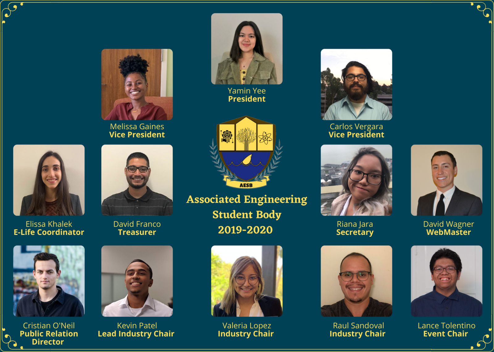
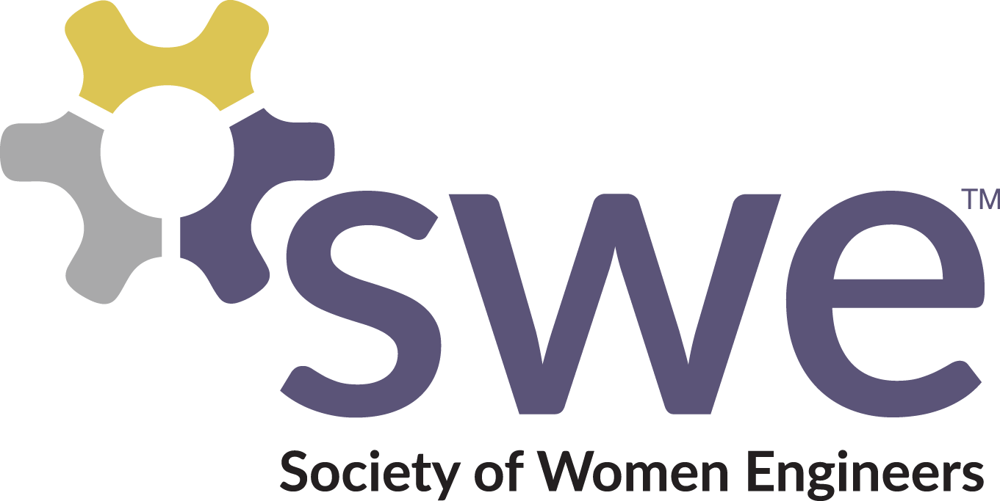
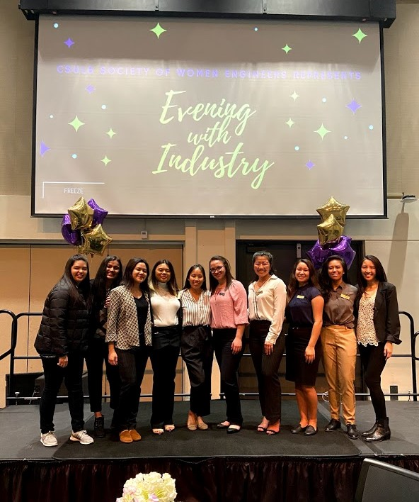
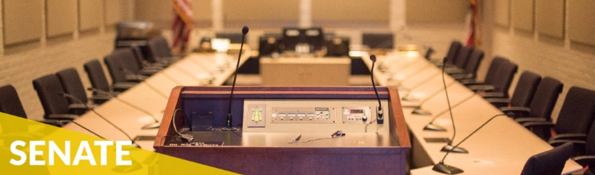
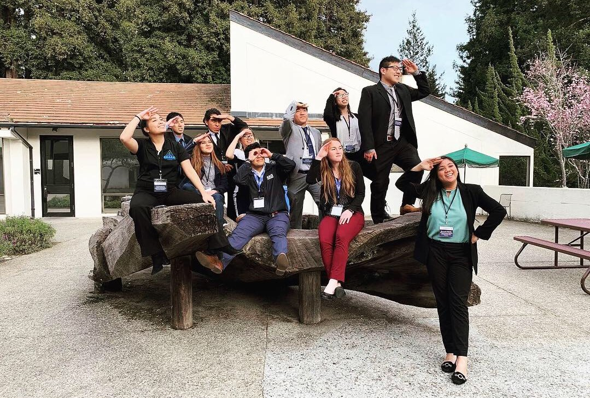

Failure is the opportunity to begin again more intelligently
Blue Jay - Food Spy

Description:
People are busy (especially college students)! In today’s world, people often have to juggle around multiple responsibilities at once: work, social life, and the dreaded bills. Food expiration
and the state of one’s fridge often falls by the wayside, assuming
that they’ll work without fault. Unfortunately, this isn’t always the case:
sometimes the power gets cut, other times multiple food items are already expired long before
someone can have the time to go through each item and check for spoilage.
That’s where we come in. We want to make it easier to quickly check the contents of the fridge, even when on the go!
System on Chip Specification

Description:
The Top Level is the connection between two things, the Core
and the TSI. The Core consists of the design itself, while TSI contains all
references to the target technology libraries. Any communication from the core’s
I/O’s must pass through the TSI before interacting with the FPGA.
The functionalities of both of Transmit Engine and Receive
Engine of the UART. The Transmit Engine was verified when the
statement is consistently printed on a Serial Terminal. Next the
Receive Engine was verified when it was able to take in a user
inputted character and transmit directly to the terminal. The design
was also able to detect parity errors, framing errors, and overflow
errors in case the transmission of data from one machine to the next
was not correct. Additionally, the TramelBlaze was able to service the
correct engine based on the Port ID’s.
MIB was created to give the TramelBlaze access to the
on-board Micron Memory. Alongside with the Full UART, the Tramel
Blaze should be able to take in data from Serial Terminal and write
those characters into a location in memory. Once an asterisk is
received by the Receive Engine, the data in the memory will then be
read by the Tramel Blaze and output to the Serial Terminal.
Single Cycle MIPS Processor

Description:
The single cycle processor’s instruction execution starts by using the counter to apply the instruction address to the instruction memory.
After the instruction is fetched, the register operands used by an instruction address to the instruction memory.
After the instruction is fetched, the register operands used by an instruction are specified
by the fields of that instruction. Once the operands have been fetched,
they can operate on to the compute a memory address and equality check.
The result for the ALU must be written to a register as well.
If the operation is load or store, the result of ALU is used as an address to either store a value from the registers or load a value from memory
into the registers. The result from the ALU or memory is written back into the register file.
Under the Single Cycle Processor, there are controls signals which are also the inputs, under this project I use the name as RegWrite, ALUSrc, MemWrite, MemtoReg, MemRead which are controlled by the control but since we are not working on
control module yet in this project. The given top level is the top level we are given to implement.
Clock Wise Pixel Neon Table Display
Description:
I personally crated this clock wise travelling pixel neon table display for one of the organizations I was in last Spring 2109. I came up with idea since I love neon light and also love decorating for home and so I feel like creating a travel display neon light
in clock wise with different color makes the home and room more. I love it since it came out as I expected .
UART and Bluetooth
Description:
The goal of this project was to control the frequency of a sine wave and the
brightness of an LED by sending Bluetooth commands via a Bluetooth terminal app on
an Android device. Two TM4C Launchpads were utilized; one to handle the commands
received via Bluetooth and the other to update the sine wave frequency or the LED
brightness. The sine wave will be produced using the same hardware and logic from the
previous project.
The user will interface will the microcontrollers using a Bluetooth terminal app on
an Android device. Once the HC-05 module and the terminal app are connected, the
user can then send commands to change the sine wave frequency or LED brightness.
For the sine wave frequency, the user must first type an ‘f’, then follow it with a value
from 262 to 494. To change the brightness, the user must first type a ‘b’, then follow it
with a value from 0-255. When this data is sent, it will have the ASCII value for carriage
return attached to it for the microcontroller to properly identify the end of the command.
Once the microcontroller receives the data, it checks to make sure the value is within
the specified range, otherwise it will not update the frequency or brightness. If the value
is within the range, the first microcontroller will send the data to the microcontroller
responsible for changing the frequency and brightness. The user will then be able to
see the new sine wave frequency on an oscilloscope or the changed LED on the
second microcontroller
@2021 Yamin-Yee. All Rights Reserved

Woman In Engineering
You should never limit your dreams and abiliities as a woman in STEM
Experiences as Woman in Engineering
I feel like as a woman in STEM, you should never limit your ablities because of other people are saying so.
You should always follow your dreams no matter how hard it takes.
I had so many Experiences in my life that teah me how to become a better me.
You should never live in the past but you should always compete with yourself.
Where you were before and you are right now is a big difference.
You shoud never compare yourself with others because we all have different life paths, backgrounds, and dreams.
You are the only one who should always compare yourself and at the same time, don't harsh on yourself too much.
If there were mistakes, you should learn from them and move on. Keep going and never give up!
I have several Leadership Experiences and some of them make me grow a lot as a person.
Some of them teach me how to handle people and how to work in team and communicate.
I feel like it is always important to involve outside of classes.
It will help you to meet with so many people with different backgrounds.
It will make you think outside of the box.
Never Lose Hope! Never Stop Working! Never Stop Planning! Never Stop Dreaming! Be Bold! Be Kind! Be a Hardworker!
-Yamin Yee
President, Associated Engineering Student Body

Associated Engineering Student Body( AESB ) is the College Council of the College of Engineering here at California State University, Long Beach. AESB is the largest Associated Student Body at CSULB which associated with more than 20 organizations. AESB advises the COE Dean of its recommendations on matters concerning the general welfare of the COE students. AESB is also a liaison between
the COE administration, faculty, recognized student organizations, and members of the COE student body.

I served as President of Engineering Student Council from 2019-2020 school year.
I facilitated high level communication to Engineering organizations as well as Student Body at California State University, Long Beach
and oversaw the Executive Board and all Engineering organizations as well as all tasks within College of Engineering and Engineering Student Body.
I also had to schedule and preside over both General Body and executive meetings, and
review the constitution and bylaws and appoint executive officers, Student Government Senators, and other leadership positions.
Achievement : Hosted the Engineering Welcome Week at the beginning of Fall 2019 / Engineering Student Council Award 2019.
Hosted E-Week 2020 - Highlighted with Industry Night with my industry chairs
FY21 Leadership Developement Member & Vice President, Society of Women Engineers(SWE)

For more than six decades, SWE has given women engineers a unique place and voice within the engineering industry.
The organization is centered around a passion for our members' success and continues to evolve with the challenges
and opportunities reflected in today's exciting engineering and technology specialties.

I served as Vice President of SWE at CSULB chapter from 2019-2020 school year.
I assumed all the responsibilities of the President when she is unaviliable.
I also had to serve a liaison between the Executive Council and the general membership.
I attended Executive Counicl Meeting and introduce new members to the section and
also recruited speakers to fill meeting schedule beyond employers.
If you are women in engineering and interested to be part of SWE, please check out the SWE Link as following:
Senator of College of Engineering, ASI Students Government CSULB
Committed to the principle of student self-determination in the shared governance of the university,
the Associated Students of California State University, Long Beach seeks to facilitate the achievement
of students’ educational objectives and life goals through programs, services, and facilities that advocate
student needs and interests, compel student representation in campus decision-making, and provide students with
the resources that they identify as necessary for their intellectual, social, and physical development.

I served as Sentor of College of Engineering at Student Government and I served there from
2018-2019 school year. I had great experiences there by meeting with many other leaders with different backgrounds
and some of them even taught me how to become a better leader in future. I represent as student leader of College of Engineering.
I wrote resolution with other college senators for whole CSULB campus and researched what
College of Engineering students want and need and also met with Dean of College of Engineering and discuss
improve change, situations under COE and etc
Achievements
- Senator Of Week on the week of February 6
- Recognition of Long Beach Mayor Certification
Public Relation Chair, Society of Asian Scientists and Engineers
SASE is dedicated to the advancement of Asian heritage scientists and engineers in education and
employment so that they can achieve their full career potential. In addition to professional development,
SASE also encourages members to contribute to the enhancement of the communities in which they live.
SASE’s mission is to:
Prepare Asian heritage scientists and engineers for success in the global business world.
Celebrate diversity on campuses and in the workplace.
Provide opportunities for members to make contributions to their local communities.

I served as PR at SASE during Fall 2018 and SASE was my really first organization which taugh me more about Professionalism
and engineering and I could able to meet great mentors who could help me to grow as leader. I had to created serveral
event flyers and even I had to created the logo of SASE as CSULB chapter. I could get a chance to attended the National and Regional
Conferences of SASE and I could even able to get a chance to see the CEO of Boeing at National Conference.